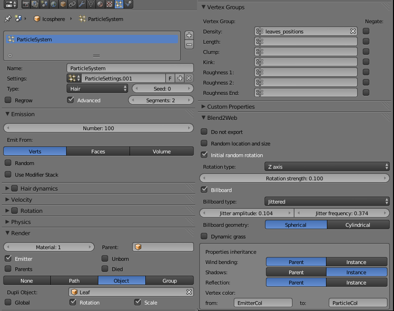

Система частиц для инстансинга объектов¶
Система частиц может использоваться для создания множественных копий объектов (инстансинга).

Настройки системы частиц¶
Активация
- На эмиттере создать систему частиц типа Hair.
- В панели Render выбрать тип отображения Object (или Group).
- В поле Dupli Object (или Dupli Group) выбрать объект (или группу объектов) для инстансинга. Поддерживаются как локальные, так и подключенные по ссылке объекты (или группы).
Рекомендуемые дополнительные настройки
- Для корректного отображения размера установить значение 1.0 для параметров Emission > Hair Length и Render > Size.
- Для установки корректной ориентации временно включить опцию Advanced, активировать панель Rotation и в меню Initial Orientation выбрать None. Отключить опцию Advanced. Также рекомендуется включить опцию Render > Rotation.

Настройка
- Render > Use Count
- Опция доступна для групп объектов-частиц. При включении появляется интерфейс установки относительного количества входящих в группу объектов. Движок не воспроизводит точное местонахождение объектов заданных типов.
- Blend4Web > Random location and size
- Опция устанавливает случайный характер расположения и размеров объектов. Если опция включена, движок генерирует случайные координаты и размер (в пределах ±25%) объектов-частиц. Если опция выключена, производится экспорт и использование текущих координат и размеров объектов-частиц. По умолчанию включено.
- Blend4Web > Initial random rotation
- Опция устанавливает случайный характер вращения объектов относительно оси определяемой параметром Rotation type. Если опция включена, движок генерирует случайные углы вращения объектов-частиц. Если опция выключена, устанавливается нулевой угол вращения. По умолчанию включено.
- Blend4Web > Rotation type
- Ось случайного поворота объекта (опция доступна при включении Blend4Web > Initial random rotation). Возможны 2 варианта:
- Z axis - случайный поворот будет осуществлен относительно вертикальной оси Z
- Random axis - случайный поворот будет осуществлен относительно случайной оси
Значение по умолчанию Z axis.
- Blend4Web > Rotation strength
- Коэффициент, определяющий диапазон случайных углов поворота, отсчитываемых от направления на камеру (опция доступна при включении Blend4Web > Initial random rotation). Например:
- Rotation strength = 1 - углы будут лежать в пределах \([-\pi, \pi]\)
- Rotation strength = 0.5 - углы будут лежать в пределах \([-0.5 \cdot \pi, 0.5 \cdot \pi]\)
- Rotation strength = 0.1 - углы будут лежать в пределах \([-0.1 \cdot \pi, 0.1 \cdot \pi]\)
Значение по умолчанию 1.
- Blend4Web > Billboard
- Включение биллбординга для частиц. По умолчанию выключено.
- Blend4Web > Billboard type
- Тип биллбординга (опция доступна при включении Blend4Web > Billboard). Доступны 3 типа:
- Basic - простой односторонний биллбординг: частицы всегда будут повернуты лицевой стороной
- Random - случайный двусторонний биллбординг: частицы чаще всего будут повернуты лицевой, либо обратной стороной, реже - боком; присутствует небольшой случайный поворот; модель создана специально для инстансинга травы
- Jittered - односторонний биллбординг с колебанием частиц в плоскости, обращенной к наблюдателю; модель создана специально для инстансинга листвы деревьев
Значение по умолчанию Basic.
- Blend4Web > Jitter amplitude
- Коэффициент амплитуды колебаний частиц (опция доступна при выборе типа Jittered в Blend4Web > Billboard type). При увеличении параметра амплитуда растет. Значение по умолчанию 0.
- Blend4Web > Jitter frequency
- Частота колебаний частиц, Гц (опция доступна при выборе типа Jittered в Blend4Web > Billboard type). Значение по умолчанию 0.
- Blend4Web > Billboard geometry
- Тип вращения биллбордов (опция доступна при включении Blend4Web > Billboard). Доступны 2 типа:
- Spherical - сферический биллбординг, полная ориентация частиц по отношению к наблюдателю, вращение ничем не ограничено
- Cylindrical - цилиндрический биллбординг, вращение частиц только относительно оси Z
Значение по умолчанию Spherical.
- Blend4Web > Dynamic Grass
- Опция включает режим динамического рендеринга травяного покрова. По умолчанию отключено.
- Blend4Web > Wind bending
- Наследование частицами настроек Wind bending:
- Parent - наследование с эмиттера
- Instance - наследование с объекта самой частицы
Значение по умолчанию Parent.
- Blend4Web > Shadows
- Наследование частицами настроек теней:
- Parent - наследование с эмиттера
- Instance - наследование с объекта самой частицы
Значение по умолчанию Parent.
- Blend4Web > Reflection
- Наследование частицами настроек отражений:
- Parent - наследование с эмиттера
- Instance - наследование с объекта самой частицы
Значение по умолчанию Parent.
- Blend4Web > Vertex color
- Наследование частицами вертексного цвета с эмиттера. Содержит 2 поля:
- from - имя существующего у эмиттера вертексного цвета
- to - имя существующего у частицы вертексного цвета
По умолчанию наследования не происходит.
Травяной покров¶
Инстансинг объектов может использоваться для визуализации травяного покрова на обширных площадях. При этом происходит отрисовка травы вблизи камеры по мере ее движения по ландшафту.

Активация
- На отдельном объекте-плоскости создать систему частиц для инстансинга объектов. Включить опцию Blend4Web > Dynamic Grass.
- На предполагаемом материале ландшафта включить опцию Blend4Web > Terrain dynamic grass.
Настройка
Рекомендуется создать несколько плоскостей (например, 3) с размерами, соответствующими желаемому размеру каскада травяного покрова (например, 100, 150 и 250 м).
На материале ландшафта при включении опции Blend4Web > Terrain dynamic grass становятся активными текстовые поля:
- Dynamic grass size (R)
- Название слоя вертексного цвета меша ландшафта, предназначенного для модифицирования размера травяного покрова. Размер (“высота”) травяного покрова задается оттенками серого - чем светлее, тем больше.
- Dynamic grass color (RGB)
- Название слоя вертексного цвета меша ландшафта, предназначенного для подкраски травяного покрова. Вертексный цвет умножается на цвет материала травы. Параметр Influence > Blend диффузной текстуры материала травы должен иметь значение Multiply.
Слои вертексного цвета с такими названиями должны существовать в меше ландшафта.
Рекомендуется также отключить отображение эмиттера (опция Render > Emitter).

Листва деревьев¶
Инстансинг хорошо подходит для отображения листвы на деревьях, и позволяет добиться более высокого уровня детализации.

Активация
Осуществляется как описано выше в разделе Настройки системы частиц -> Активация. Здесь соответственно эмиттером будет выступать дерево, а частицами - ветки, листья и т.д.
Для эмиттера дополнительно можно сделать следующее:
- создать вертексную группу, включающую вершины, на которых будут располагаться частицы
- создать слой вертексного цвета для настройки Wind Bending дерева и листвы
- создать слой вертексного цвета для наследования его частицами (можно использовать, например, для подкраски частиц)
Настройка
- Настройки случайного поворота
Если включена опция Blend4Web > Initial random rotation, то рекомендуется выставить вертикальную ось случайного поворота - Z axis (опция Blend4Web > Rotation type). Опция Blend4Web > Rotation strength - на свое усмотрение.
- Настройки биллбординга
Рекомендуется включить биллбординг, выставить тип Jittered (опция Blend4Web > Billboard type) и сделать его сферическим - Spherical (опция Blend4Web > Billboard geometry). Настройки Blend4Web > Jitter amplitude и Blend4Web > Jitter frequency - на свое усмотрение.
- Настройки расположения частиц
Рекомендуется выставить опцию Emission > Emit From в значение Verts, а в Vertex Group > Density выбрать вертексную группу эмиттера с вершинами для расположения частиц. Также нужно отключить опцию Blend4Web > Random location and size.
- Настройки Wind Bending
Рекомендуется включить наследование настроек из эмиттера - выставить Parent в опции Blend4Web > Wind bending. Затем у эмиттера в панели Object выбрать опцию Blend4Web > Wind bending и настроить параметры бендинга. Для дерева достаточно указать параметры Blend4Web > Main Bending > Angle и Blend4Web > Main Bending > Frequency, а также вертексный цвет для бендинга - Blend4Web > Main Bending > Main stiffness.
- Настройки наследования вертексного цвета
Для наследования частицами вертексного цвета эмиттера нужно указать имя цвета эмиттера и имя цвета частицы соответственно в полях Blend4Web > Vertex Color > from и Blend4Web > Vertex Color > to. При наследовании цвет ближайшей к частице вершины эмиттера из from будет скопирован и размножен в цвет to частицы.
Полученный таким образом вертексный цвет с именем Blend4Web > Vertex Color > to можно будет использовать в нодовом материале частицы для ее подкрашивания либо каких-то других эффектов.
{kind=link}